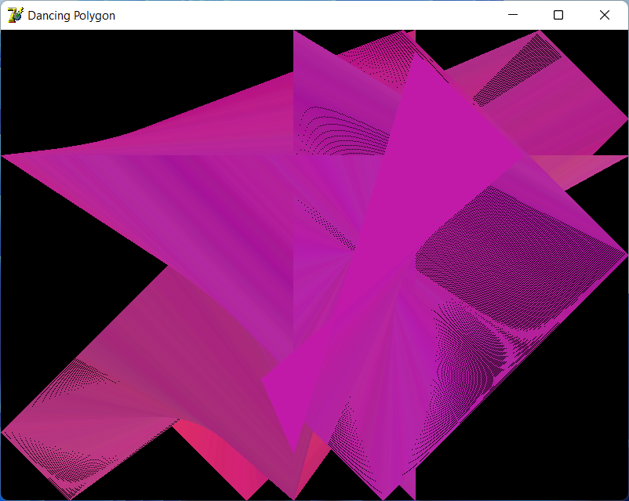

...::: Ivan Movchan's Website :::...
Sample Text
Dancing Polygon
Весьма странная и никому не понятная хрень, которая рисует прикольные фигурки с использованием GDI-функций.

Программа была написана мной за несколько дней на Delphi 7. Никакой практической/теоретической ценности не представляет, кроме генерации прикольных фигурок (polygon) с их дальнейшей раскраской и танцами, используя GDI-функции. Есть функция экспорта в BMP-файл, но нет русской локализации :DDDD
• Версия 1.0 от 25 апреля 2022 года (сборка 25 ноября 2021 года)

Copyright © Ivan Movchan, 2021 - 2022. Рекомендуется включить JavaScript в вашем браузере для лучшего eXpErIeNcE.
Электронная почта автора: gogol2k7 at gmail dot com. Powered by GitHub